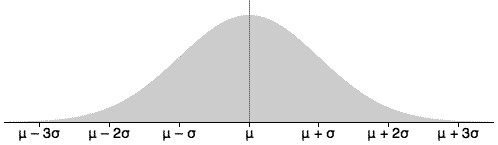

A common diagram for all normal distributions
The two normal parameters, µ and σ, describe the normal distribution's centre (mean) and spread (standard deviation). As shown on the previous page, all normal distributions have the same shape, other than their centre and spread.
The diagram below describes all normal distributions.

Observe how the tails of the distribution fade away.
Examples
In the following examples, the values of the parameters µ and σ are used to add a numerical scale to the diagram.